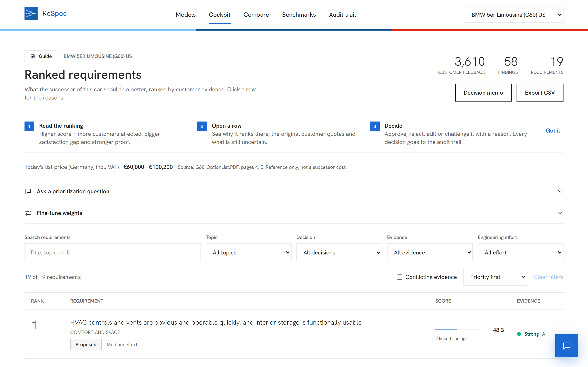

ReSpec.
Respect the voice. Define the spec.
[One-sentence subtitle, max. two lines]
[Team · date][Image note]
Respect the voice. Define the spec.
[One-sentence subtitle, max. two lines]
[Two to three lines of supporting text. Keep it short.]
[One line that explains the flow]

[Keyword]: [one sentence]
![[Alt text]](../assets/screens/detail-rank5-conflict.png)
[Keyword]: [one sentence]
![[Alt text]](../assets/screens/audit.png)
[Keyword]: [one sentence]
[Note title]: [An honest limit or caveat in one or two lines.]
[Two to three lines]
[Two to three lines]
[Two to three lines]
[Two to three lines]
AI alone plain code human decides
[Evidence ID · model · market]
[Call to action]
Blue #1c69d4
Black #0a0a0b
Ink #262626
Grey #f6f6f6
Light #81c4ff
Dark #16588e
Red #e22718
Human #d9822b
ABCD
Light 300
Regular 400
Medium 500
Semibold 600
Square corners, no shadows, generous white space, one blue highlight per slide.